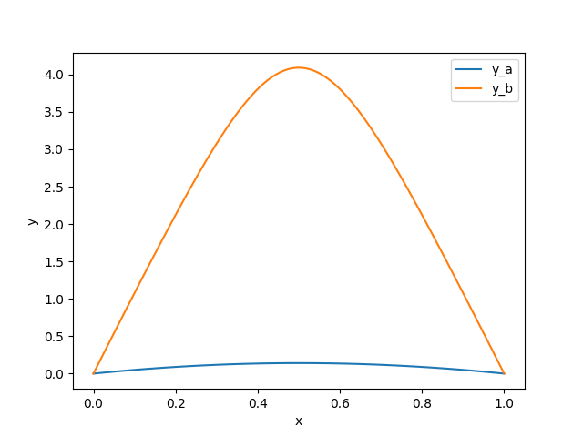
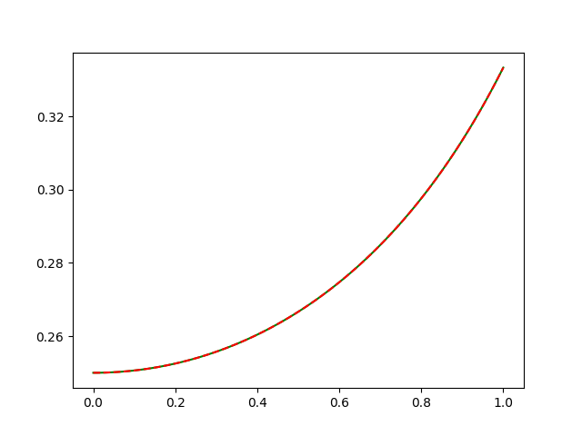
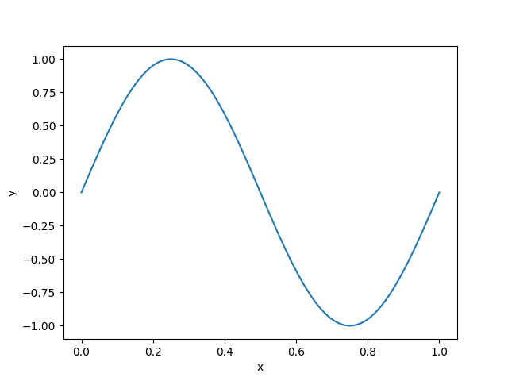

BVP problemleri şu genel formda olan problemlerdir [1, sf. 287],
$$ x"(t) = f(t, x(t), x'(t))) $$
$$x(t_0) = x_0, \quad x(t_f) = x_f$$
İkinci satır sınır şartlarını belirtiyor, zaman için $t_0,t_1,...t_f$ indisleri kullanılır, yani sistemın konumu $x(t)$'in başlangıçta $x_0$ bitişte $x_f$ noktasında olması isteniyor (bunlar gerçek tek sayı değerleri olacak). Bilinmeyen bir başlangıç şartı var, bu $x'(0)$ şartı, diyelim $x'(0) = z$. Bilinmeyen $z$'yi nasıl bulacağız? Genel yaklaşım olarak bilinen az sayıda değişkeni ileri doğru entegre ederek sonda gelinen noktaya bakılır, eldeki kısmı son nokta verisiyle karşılaştırılarak bir hata üzerinden başlangıç düzeltilmeye uğraşılır, bu özyineli şekilde devam eder. Çözüm yöntemi olarak ateş etme yöntemi (the shooting method) vardır, farklı paketler farklı yaklaşımlar kullanabilir.
Paket İle
$$ \frac{\mathrm{d} y}{\mathrm{d} x} = f(x, y, p) + \frac{S y}{x-a} $$
$$ a \le x \le b, \quad bc(y(a), y(b), p) = 0 $$
ki $x$ tek boyutlu bağımsız değişken, $y(x)$ n-boyutlu vektör değerli fonksiyon, $p$ $k$ boyutlu bilinmeyen parametrelerin vektörü, ki onu $y(x)$'yi bulurken aynı anda bulmak gerekiyor. $bc$ ile sınır şartları tanımlanıyor.
Bratu Problemi
Paket çözümleri de kullanılabilir [2, sf. 396]. Mesela scipy. Bratu
problemi
$$ y" + k + \exp(y) = 0 $$
$$ y(0) = y(1) = 0 $$
Bu sistemi 1. derece bir denklemler sistemine değiştirelim,
$$ y_1' = y_2 $$
$$ y_2' = -\exp(y_1) $$
def fun(x, y):
# k=1 farz edildi
return np.vstack((y[1], -np.exp(y[0])))
def bc(ya, yb):
return np.array([ya[0], yb[0]])
x = np.linspace(0, 1, 5)
Çağrı bc içinde sınır şartlarının artığı, hatası donduruluyor. Daha
doğrusu bc'ye verilen iki parametre içinde başta ve sonda olmak
üzere $y = [y_1,y_2]$ formatında artık değerler var. Bu artıklardan
hangisinin belirlediğimiz sınır şartına ait olanı biz seçiyoruz. Mesela
ya[0] ve yb[0] ile içinde $y_1$'in başta ve sondaki değerini
seçmiş oluyoruz, ki zaten problemin sınır şartları onlar üzerinden
tanımlanmıştı. Eğer $y_1'$, yani $y_2$ üzerinde bir son şart olsaydı o
zaman yb 1. indisteki değeri döndürürdük.
Bu problemin iki farklı çözümü var. Her iki çözümü de elde etmek için $y$ için farklı başlangıç noktaları deneyeceğiz, bu seçenekleri $1$ ve $2$ olarak işaretleyelim,
y_1 = np.zeros((2, x.size))
y_2 = np.zeros((2, x.size))
y_2[0] = 3
from scipy.integrate import solve_bvp
res_1 = solve_bvp(fun, bc, x, y_1)
res_2 = solve_bvp(fun, bc, x, y_2)
x_plot = np.linspace(0, 1, 100)
y_plot_1 = res_1.sol(x_plot)[0]
y_plot_2 = res_2.sol(x_plot)[0]
plt.plot(x_plot, y_plot_1, label='y_a')
plt.plot(x_plot, y_plot_2, label='y_b')
plt.legend()
plt.xlabel("x")
plt.ylabel("y")
plt.savefig('compscieng_app10boundary_03.png')

Top Atışı Metotu (Shooting Method)
Bir diğer çözüm yöntemi top atışı (silah anlamında) problemidir, güllenin nereden atıldığı bilinir, düşmesi istenen bir yer vardır, ama hangi aciyla (burada $x'(0))$ yukarı doğru tutulacağı bilinmez.
Bilinmeyen başlangıç şartlarından birini bulmak için bir yöntem tüm bilinenleri kullanıp, bilinmeyen için bir tahmin yerine koymak, ve bu sistemi entegre ederek sonuca gelmek. Sonuca gelindiğinde $x_f$'e ne kadar yakın olunduğuna göre bir hata gradyanı oluşturup bu gradyanı $x'(0)$'te düzeltme yapmak için kullanmak, ve süreci tekrarlamak. Bu işlem ardı ardına yapılır ve istenen bitiş değerine gelince durulur. Bu yönteme ilham aldığı temel örnekten hareketle atış metotu (the shooting method) adı veriliyor.
Gradyanı hesaplamak ve düzeltmede kullanmak için Sekant Yöntemini kullanabiliriz (bkz Diferansiyel Denklemler, Kök Bulmak yazısı). Hata fonksiyonu $z$'nin fonksiyonudur,
$$ e(z) = x(t_f) - x_f $$
İstediğimiz $e(z)$'nin minimal olması, yani sıfıra eşit olması, $e(z) = 0$. Bu durumda bir kök bulma problemi ortaya çıkıyor,
$$ z_{n+1} = z_n - \frac{ \quad e(z_n) \quad }{\frac{\mathrm{d} e(z_n) }{\mathrm{d} z_n} }$$
Sekant yöntemi için
$$ z_{n+1} = z_n - \frac{ e(z_n) }{\quad \dfrac{e(z_n) - e(z_{n-1})}{z_n - z_{n-1}} \quad } $$
Örnek
$$ x"(t) = 2x^2(t) + 4t x(t) x'(t)$$
$$ x(0) = \frac{1}{4}, \quad x(1) = \frac{1}{3}$$
Bu problemin analitik çözümü aslında biliniyor,
$$x(t) = \frac{1}{4 - t^2}, \quad x'(t) = \frac{2t}{(4-t^2)^2} = 2t x^2(t)$$
Ama bilmeseydi nasıl çözerdik? Alttaki gibi. Önce $x_1'(t)$ için yeni bir değişken tanımlayalım, $x_1'(t) = x_2(t)$ olsun, o zaman $x_2'(t)$ ana ODE denklemimiz olabilir, çok boyutlu olarak
$$ \left[\begin{array}{c} x_1'(t) \\ x_2'(t) \end{array}\right] = \left[\begin{array}{c} x_2(t) \\ 2x_1^2(t) + 4t \cdot x_1(t)x_2(t) \end{array}\right] $$
Sınır şartları
$$ \left[\begin{array}{c} x_1(0) \\ x_2(0) \end{array}\right] = \left[\begin{array}{c} x_0 = 1/4 \\ x_f = 1/3 \end{array}\right] $$
Kod,
import scipy as sp import numpy.linalg as lin from
scipy.integrate.odepack import odeint
def rhs(u,t):
x1, x2, = u
return [x2, (2*x1 + 4*t*x2)*x1]
def bvp_shoot(t0,tf,x0,xf,N,tol,kmax):
dx0 = np.zeros(kmax)
e = np.zeros(kmax)
dx0[0]= (xf-x0)/(tf-t0);
t=np.linspace(t0,tf,100.0)
for k in range(1,kmax-1):
x=odeint(rhs,[x0, dx0[k]], t)
e[k]=x[-1,0]-xf
ddx= dx0[k]-dx0[k-1]
if np.abs(e[k])<tol or np.abs(ddx)<tol: break
deddx= (e[k]-e[k-1])/ddx;
dx0[k+1] = dx0[k]-e[k]/deddx;
return t, x
t0 = 0.; tf = 1.; x0 = 1/4.; xf = 1/3.;
N = 100.; tol = 1e-8; kmax = 10;
t,x = bvp_shoot(t0,tf,x0,xf,N,tol,kmax)
xo = 1.0 /(4.0 - t**2); err = lin.norm(x[:,0] - xo)/(N + 1.0)
plt.plot(t,x[:,0],'g') # bizim hesap
plt.plot(t,xo,'--r') # analitik bilinen
plt.savefig('compscieng_app10boundary_01.png')

Grafikte görüldüğü gibi iki çözüm birbirinin tıpkı aynısı.
Sturm-Liouville
Yine paket ile devam edelim. Sturm-Liouville adlı bir problemi çözelim,
$$ y" + k^y = 0 $$
$$ y(0) = y(1) = 0 $$
Bu problemin $n$ bir tam sayı olmak üzere $k = n \pi$ için bariz / önemsiz olmayan bir çözümünün $y=A\sin(kx)$ olduğu biliniyor. $A=1$ ile normalizasyon sağlamak için bir sınır şart daha ekliyoruz,
$$ y'(0) = k $$
Çünkü $y=A\sin(kx) \to y' = A k \cos(kx)$, ve $y'(0)$ dersek $y'(0) = A k \cos(0)) = A k$ olacaktır, o zaman $y'(0) = k$ şartını koyarsak $A=1$'i zorlamış oluruz.
$$ y_1' = y_2 $$
$$ y_2' = -k^2 y_1 $$
Ayrıca $k\pi$ için bir çözüm aradığımız için $y$ değerlerinin aşağı yukarı $\sin(2\pi x)$'yi takip etmesini sağlıyoruz,
from scipy.integrate import solve_bvp
def fun(x, y, p):
k = p[0]
return np.vstack((y[1], -k**2 * y[0]))
def bc(ya, yb, p):
k = p[0]
return np.array([ya[0], yb[0], ya[1] - k])
x = np.linspace(0, 1, 5)
y = np.zeros((2, x.size))
y[0, 1] = 1
y[0, 3] = -1
sol = solve_bvp(fun, bc, x, y, p=[6])
print (sol.p)
[6.2832946]
$k$'nin asagi yukari dogru degerde oldugunu goruyoruz. Tum cozumu grafikleyince beklenen sinus egrisini de gorecegiz,
x_plot = np.linspace(0, 1, 100)
y_plot = sol.sol(x_plot)[0]
plt.plot(x_plot, y_plot)
plt.xlabel("x")
plt.ylabel("y")
plt.savefig('compscieng_app10boundary_04.png')

Kaynaklar
[1] Yang, Applied Numerical Methods using Matlab
[2] Scipy, Scipy Reference, 0.18.1